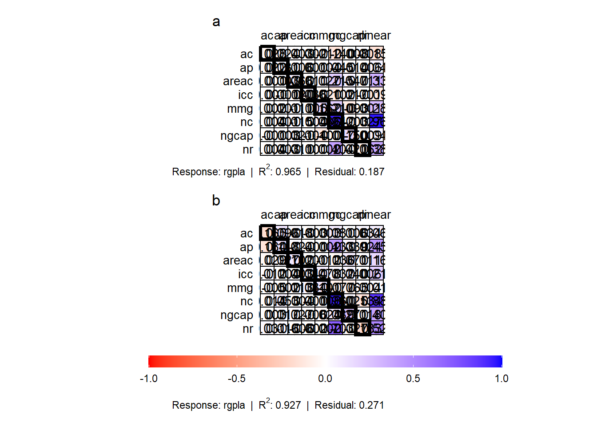

05: Análise de trilha para caracteres agronômicos e componentes de rendimento em genótipos de linhaça (Linum usitatissimum, L.)
1 Libraries
To reproduce the examples of this material, the R packages the following packages are needed.
2 Dados
df <-
import("data/data_mgidi.csv") |>
remove_rows_na() |>
filter(epoca %in% c("E1", "E4")) |>
replace_string(epoca, pattern = "E4", replacement = "E2")3 Multicolinearidade
3.1 Encontrar preditores com baixa colinearidade
df |>
group_by(epoca) |>
non_collinear_vars(-c(rgpla))
## # A tibble: 12 × 3
## epoca Parameter values
## <chr> <chr> <chr>
## 1 E1 Predictors 8
## 2 E1 VIF 3.436
## 3 E1 Condition Number 14.879
## 4 E1 Determinant 0.0544051003
## 5 E1 Selected nr, nc, areac, icc, ap, ac, ngcap, mmg
## 6 E1 Removed ng, mc
## 7 E2 Predictors 8
## 8 E2 VIF 5.911
## 9 E2 Condition Number 24.187
## 10 E2 Determinant 0.0288690825
## 11 E2 Selected areac, mmg, icc, nr, ngcap, mc, ac, ap
## 12 E2 Removed nc, ng3.2 Colinearidade dentro de cada época
coldiag <-
df |>
group_by(epoca) |>
colindiag(-c(rgpla, ng, mc))
## INDICADORES
cold <- gmd(coldiag)
# export(cold, "data/path_results.xlsx", which = "coldiag")
## VIFS
vifs <- get_model_data(coldiag, "VIF")
# export(vifs, "data/path_results.xlsx", which = "vifs") 4 Trilha
mod_trilha <-
df |>
group_by(epoca) |>
path_coeff(resp = rgpla,
pred = -c(mc, ng))
## Weak multicollinearity.
## Condition Number: 23.548
## You will probably have path coefficients close to being unbiased.
## Weak multicollinearity.
## Condition Number: 14.879
## You will probably have path coefficients close to being unbiased.
p1 <- plot(mod_trilha$data[[1]])
p2 <- plot(mod_trilha$data[[2]])
arrange_ggplot(p1, p2, ncol = 1,
guides = "collect",
tag_levels = "a")
ggsave("figs/path_coefs.jpg",
height = 12,
width = 6)5 Section info
sessionInfo()
## R version 4.2.2 (2022-10-31 ucrt)
## Platform: x86_64-w64-mingw32/x64 (64-bit)
## Running under: Windows 10 x64 (build 22621)
##
## Matrix products: default
##
## locale:
## [1] LC_COLLATE=Portuguese_Brazil.utf8 LC_CTYPE=Portuguese_Brazil.utf8
## [3] LC_MONETARY=Portuguese_Brazil.utf8 LC_NUMERIC=C
## [5] LC_TIME=Portuguese_Brazil.utf8
##
## attached base packages:
## [1] stats graphics grDevices utils datasets methods base
##
## other attached packages:
## [1] metan_1.18.0 lubridate_1.9.2 forcats_1.0.0 stringr_1.5.0
## [5] dplyr_1.1.2 purrr_1.0.1 readr_2.1.4 tidyr_1.3.0
## [9] tibble_3.2.1 ggplot2_3.4.2 tidyverse_2.0.0 rio_0.5.29
##
## loaded via a namespace (and not attached):
## [1] jsonlite_1.8.7 splines_4.2.2 cellranger_1.1.0
## [4] yaml_2.3.7 ggrepel_0.9.3 numDeriv_2016.8-1.1
## [7] pillar_1.9.0 lattice_0.20-45 glue_1.6.2
## [10] digest_0.6.33 RColorBrewer_1.1-3 polyclip_1.10-4
## [13] minqa_1.2.5 colorspace_2.1-0 htmltools_0.5.5
## [16] Matrix_1.6-0 plyr_1.8.8 pkgconfig_2.0.3
## [19] haven_2.5.3 patchwork_1.1.2 scales_1.2.1
## [22] tweenr_2.0.2 openxlsx_4.2.5.2 tzdb_0.4.0
## [25] lme4_1.1-34 ggforce_0.4.1 timechange_0.2.0
## [28] generics_0.1.3 farver_2.1.1 withr_2.5.0
## [31] cli_3.6.1 magrittr_2.0.3 readxl_1.4.3
## [34] evaluate_0.21 GGally_2.1.2 fansi_1.0.4
## [37] nlme_3.1-160 MASS_7.3-60 foreign_0.8-83
## [40] textshaping_0.3.6 tools_4.2.2 data.table_1.14.8
## [43] hms_1.1.3 lifecycle_1.0.3 munsell_0.5.0
## [46] zip_2.3.0 compiler_4.2.2 systemfonts_1.0.4
## [49] rlang_1.1.1 grid_4.2.2 nloptr_2.0.3
## [52] rstudioapi_0.15.0 htmlwidgets_1.6.2 labeling_0.4.2
## [55] rmarkdown_2.23 boot_1.3-28 gtable_0.3.3
## [58] lmerTest_3.1-3 reshape_0.8.9 curl_5.0.1
## [61] R6_2.5.1 knitr_1.43 fastmap_1.1.1
## [64] utf8_1.2.3 mathjaxr_1.6-0 ragg_1.2.5
## [67] stringi_1.7.12 Rcpp_1.0.11 vctrs_0.6.3
## [70] tidyselect_1.2.0 xfun_0.39